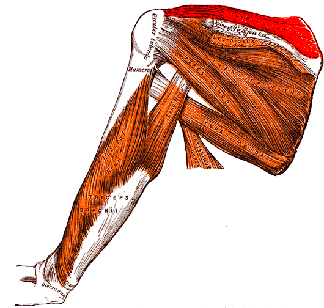

דף מושג 001 שרוול המסובבים
Supraspinatusהשריר העל־קוצי
שריר קטן מעל לקוץ השכמה, עם שני תפקידים מרכזיים: סיוע בחטיפת הזרוע וייצוב ראש ההומרוס במפרק הכתף.
התמונה הגדולה
עובדות מפתח
| מאפיין | מה צריך לזכור |
|---|---|
| מוצא | הגומץ העל־קוצי של השכמה (Supraspinous fossa) |
| אחז | המשטח העליון של הגבשושית הגדולה בהומרוס; הגיד מתמזג גם בקופסית מפרק הכתף |
| עצבוב | העצב העל־שכמתי (Suprascapular nerve) · C5–C6 |
| אספקת דם | בעיקר העורק העל־שכמתי (Suprascapular artery) |
| פעולה | סיוע בחטיפת הזרוע, במיוחד בתחילת התנועה, וייצוב דינמי של ראש ההומרוס |
לפי NCBI ו־Kenhub · מקורות 1–2
מצאו אותו בתמונה
מעל לקוץ. מתחת לאקרומיון.

מסלול השריר
- מתחיל בשכמה
ממלא את הגומץ העל־קוצי, מעל לרכס הגרמי הנקרא קוץ השכמה.
- ממשיך מתחת לאקרומיון
הגיד עובר לטרלית, עמוק לאקרומיון, לכיוון מפרק הכתף.
- נאחז בהומרוס
מגיע למשטח העליון של הגבשושית הגדולה ומתחבר גם לקופסית המפרק.
Supra = מעל; spinatus מתייחס לקוץ השכמה. השם עוזר לזכור את המיקום.
תבנית קבועה לכל שריר
פרופיל השריר
קראו את השדות הקבועים, ואז הסתירו את התשובות ונסו לשלוף מהזיכרון.
מוצא Origin
הגומץ העל־קוצי של השכמה, בעיקר בחלקו המדיאלי.
מאיזה גומץ בשכמה מתחיל השריר?
אחז Insertion
המשטח העליון (Superior facet) של הגבשושית הגדולה בהומרוס. הגיד מתמזג גם בקופסית המפרק הגלנו־הומרלי.
איזו גבשושית, איזה משטח, ואיזה מבנה נוסף מחובר לגיד?
עצבוב Innervation
העצב העל־שכמתי, C5–C6, שמקורו בגזע העליון של מקלעת הזרוע.
מהו העצב, מהם השורשים ומהו הגזע במקלעת?
אספקת דם Blood supply
בעיקר העורק העל־שכמתי. תיתכן תרומה קולטרלית מן העורק השכמתי הגבי.
מהו העורק העיקרי המספק את השריר?
פעולה Action
מתחיל ותורם לחטיפת הזרוע, ומייצב את ראש ההומרוס מול הגלנואיד עם יתר שרירי השרוול.
איזו תנועה הוא מסייע לבצע, ומה תפקידו בייצוב המפרק?
יחסים Relations
עמוק לטרפז, מעל לקוץ השכמה ולשריר התת־קוצי. הגיד עובר מתחת לאקרומיון; הבורסה התת־אקרומיאלית מפרידה בינו לבין מבנים שמעליו.
היכן הוא ביחס לקוץ השכמה, ומה נמצא מעל הגיד?
נהוג לקשר את השריר ל־0–15° הראשונות של החטיפה. זו אינה נקודת כיבוי: הוא ממשיך לתרום לתנועה עם הדלתואיד גם בהמשך הטווח.
מקורות אנטומיים · 1–3
04 · לחבר בין מבנה לקליניקה
למה השריר הזה חשוב קלינית?
גיד העל־קוצי הוא אתר שכיח במיוחד לקרעי שרוול המסובבים. המסלול מתחת לאקרומיון מסביר את הקשר לצביטה תת־אקרומיאלית ולבורסיטיס. כאב או חולשה בהרמה מעל גובה הכתף יכולים להתאים לפגיעה, אך אינם ספציפיים לה.
בודקים כאב או חולשה כנגד התנגדות כשהזרוע בחטיפה ובסיבוב פנימי. תוצאה חיובית היא ממצא בבדיקה — לא אבחנה עצמאית. מפרשים אותה יחד עם הסיפור הקליני, בדיקה נוספת והדמיה לפי הצורך.
תוכן ללימוד אנטומיה, לא הנחיה לאבחון עצמי או תחליף לייעוץ רפואי. מקור 4
מקריאה לשליפה
מה נשאר בזיכרון?
תרגול לימודי בלבד. התשובות נשמרות רק כל עוד הדף פתוח, ולא נרשמות במאגר השאלות הקיים.
להעמקה ולבדיקת התוכן
מקורות וייחוס
- NCBI · Anatomy, Shoulder and Upper Limb, Arm Supraspinatus Muscleמוצא, אחז, קופסית, עצבוב, פעולה ויחסים.
- Kenhub · Supraspinatus muscleאנטומיה, אספקת דם ויחסים מרחביים.
- TeachMeAnatomy · Supraspinatusסיווג, פעולת השריר ועצבוב.
- NCBI · Anatomy, Rotator Cuffקרעים, צביטה ומבחן Jobe.
תוכן הפיילוט נערך על בסיס המקורות ב־25.10.2026. אין עדיין אימות עריכה עצמאי של מרצה.